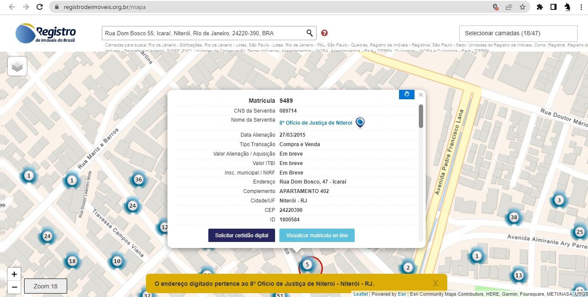
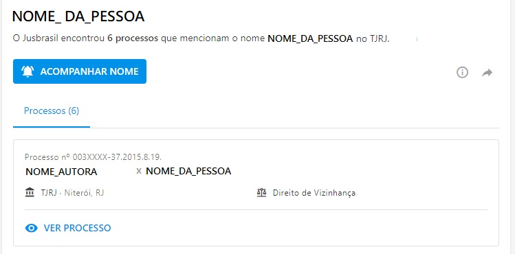

Guia Completo: Passo-a-Passo para Comprar a Casa Própria - O que verificar antes de fechar o negócio
É muito comum que quem quer comprar uma casa, principalmente se for a primeira, se deixe levar pelas emoções. Aquele tão sonhado imóvel que você encontrou e a um preço tão bom, não é mesmo? Bom demais pra ser verdade? Que tal verificar se ele está de fato com toda a documentação certa? Montei aqui esse passo-a-passo justamente para te ajudar a comprar a sua casinha, mas mantendo seus pés no chão, para que seu sonho não vire um pesadelo e você tenha paz.
PASSO-A-PASSO:
- VERIFICAR SE A IMOBILIÁRIA E O CORRETOR ESTÃO CREDENCIADOS NO CRECI
Muitos golpes ocorrem por parte de pessoas mal intencionadas que mostram a casa e , se aproveitam, para extorquir o comprador. Muitas vezes, não são donos ou mesmo corretores. Por isso, sempre verifique no site do CRECI do seu Estado.
- VER A QUAL CARTÓRIO PERTENCE O ENDEREÇO DO IMÓVEL
Insira o endereço completo do imóvel e anote o número do cartório responsável (Ex:"8° Ofício de Justiça de Niterói"). Caso apareça um ícone no endereço, clique e busque a casa. Se encontrar na relação, perfeito! Anote a matrícula do imóvel e pule para o passo 4.

- PEÇA O NÚMERO DA MATRÍCULA DO IMÓVEL AO CORRETOR
Caso não tenha encontrado o número da matrícula na etapa anterior, uma forma que te faria economizar R$ é perguntando ao corretor.
-
VISUALIZAÇÃO DA MATRÍCULA ONLINE
*VERIFICAÇÃO DE QUEM É PROPRIETÁRIO OFICIAL DO IMÓVEL*
É importante que você negocie somente com quem é proprietário de fato do imóvel. Se ainda não foi aberto inventário dos herdeiros, por exemplo, estes não são donos do imóvel! Não negocie enquanto o inventário não foi aberto e os herdeiros devidamente desgnados. Para verificar quem é o dono de fato do imóvel, há um documento chamado "Certidão de ônus reais" que informa isso.
Caso tenha conseguido o número da matrícula nas etapas anteriores, você poderá receber a VISUALIZAÇÃO DA MATRÍCULA ONLINE por um valor bem mais baixo que com a emissão da CERTIDÃO DE ÔNUS REAIS no cartório presencial. Basta acesssar o link abaixo e criar uma conta de login ou entrar com o SouGov. Depois, você irá em "Visualização de Matrícula" >"Opções">"Novo Pedido" e preencher o dados seguintes , incluir créditos referentes ao serviço e solicitar a visualização. Neste documento terá a matrícula do imóvel, todo o histórico do imóvel (compradores e vendedores durante o tempo), nome do(s) atual(is) proprietário(s) e cpf desses. Em caso de inventário realizado, o mesmo constará no documento. Esses dados são importantíssimos para , além de saber quem é dono, se este dono está sem pendências legais (nas próximas etapas, iremos verificar isso). Caso tenha acessado a VISUALIZAÇÃO DA MATRÍCULA ONLINE , pule para a etapa 6.
Veja um exemplo de Visualização de Matrícula Online
-
EMISSÃO DA CERTIDÃO DE ÔNUS REAIS
Caso não tenha conseguido a matrícula do imóvel nas etapas 2 ou 3, você terá que emitir a CERTIDÃO DE ÔNUS REAIS se quiser verificar a regularidade do imóvel e do(s) proprietário(s) antes de fechar negócio (o que recomendo). Para isso, você tem duas formas:
- PRESENCIALMENTE:
Indo pessoalmente ao cartório responsável pelo endereço , conforme verificou no passo 2, com o endereço completo da casa.
- ONLINE
Opção mais cômoda, no entanto, há um acréscimo no valor total a ser pago. Deve-se criar uma conta e solicitar a CERTIDÃO DE ÔNUS REAIS inserindo o endereço completo via site do CARTORIZE:
Veja um exemplo de Certidão de Ônus Reais
- PRESENCIALMENTE:
- CERTIDÃO DE NEGATIVA DE IPTU (GRATUITA) -ONLINE
Débitos de IPTU recaem sobre o imóvel. Havendo débitos , recairá sobre o novo comprador. Assim, é essencial que verifique se há débitos vencidos. (Se aparecer: "POSITIVO COM EFEITOS DE NEGATIVO" significa que há iptus não vencidos , ou seja, está regular e pagando o mensal e não optou pela quitação anual.). A verificação de IPTU se dá via site do município do imóvel inserindo a matrícula do imóvel ou inscrição imobiliária (número presente no carnê do iptu). Abaixo deixei os referente a alguns municípios:
- CERTIDÃO CIVIL E CRIMINAL DOS PROPRIEÁRIOS (GRATUITA)-ONLINE
Com o(s) CPF(s) do(s) proprietário(s) atual(is) e seus pais, que consta(m) na CERTIDÃO DE ÔNUS REAIS (etapa 5) e na VISUALIZAÇÃO DA MATRÍCULA (etapa 4), você poderá verificar dados importantes e que garantem que não há processos que possam envolver o imóvel à venda. Todos são gratuitos e online.
- CERTIDÃO DA JUSTIÇA DO TRABALHO (GRATUITA) - ONLINE
- CERTIDÃO DA JUSTIÇA FEDERAL (GRATUITA) - ONLINE
- CERTIDÃO DA RECEITA FEDERAL (GRATUITA) - ONLINE
- CERTIDÃO DE DÉBITOS ESTADUAIS (GRATUITA) - ONLINE
Verifique acessando o site do seu Estado.
Envolve multas de trânsito, etc.
- CERTIDÃO DE DÉBITOS TRIBUTÁRIOS MUNICIPAIS (GRATUITA) - ONLINE
- CERTIDÃO DE PROTESTO (GRATUITA) - ONLINE
(Consulta prévia. Emissão definitiva somente em cartório)
- PESQUISAR PROCESSOS DOS PROPRIETÁRIOS NO TJ
Às vezes, um imóvel está envolvido em algum processos ainda ativo.Assim, é essencial busque no jusbrasil ou tj do Estado
- JUSBRASIL- Insira no Google o nome completo do proprietário + jusbrasil. Ao acessar o site do Jusbrasil, clique em algum processo que possa ter relação com o imóvel, como o exemplo abaixo:

Clique no processo e em "MOSTRAR MAIS INFORMAÇÕES". Alí terá alguns trechos das decisões
- TJ DO ESTADO
Acesse processos via nome do proprietário no site do Tj do seu Estado
RJ- CLIQUE AQUI
- JUSBRASIL- Insira no Google o nome completo do proprietário + jusbrasil. Ao acessar o site do Jusbrasil, clique em algum processo que possa ter relação com o imóvel, como o exemplo abaixo:
{kind=link}